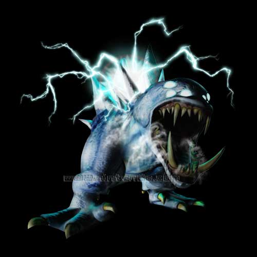

You have bombed the floor and dropped down to-Phandera
Drifts!? But Phandera is on Tallon IV which wouldn't bother you but, you're
on ZEBES!!!!
It looks like the golem hasn't gotten over the fact that you kicked his
can and it looks like he wants a rematch. Obviously you'll oblige as you have
no idea how to LEAVE!!!! As you prepare your missiles and thermal visor,
you realize something is different. The golem seems, well, hesitant. Then
you notice why, There are some other contenders in the ring.
Now it's understandable. This golem is being restrained?- by the corrupted
Ing Smashers. You decide it would be best to try and take down the golem
before messing with the Ing Smashers. So you charge some missiles and lock
on to the golem. Steady, aim it perfectly-"squee". What the-oh no! You turn
around and see a cluster of space pirates have just released a pod of metroids
in to the coliseum. The golem goes crazy. He charges the metroids. The Ing
Smashers are crushed whilst trying to stop the golem. You realize you're
next if you don't move. You strafe left and make it out of the way. The
space pirates notice you and run out of the coliseum. The golem is obliterating
the metroids. As it beats the metroids to pulp he smashes one into the wall.
You watch in amazement as the metroids are destroyed. Then you hear a sharp
*CRACK!* You look up and realize the golem's poundings are destroying the
coliseum!! A gigantic ice stalactite falls and you dodge only to realize
that another creature has entered through the wall. It's-it's....IT'S A FATHER
SHEEGOTH!!!!!
You know this bad right? I would advise a healthy
run for your LIFE! as you do so, the sheegoth chases after you. It then launches
some of it's freezing breath and you become a giant ice sickle. HURRY AND
PRESS B!!!!!!! Before you can the sheegoth reaches you and head butts you
towards the golem. It has pretty much cleaned up the metroids and it realizes
you are defenseless. Now it decides is the best time for revenge. He lifts
his leg.....
Game over,
Bounty Hunter.